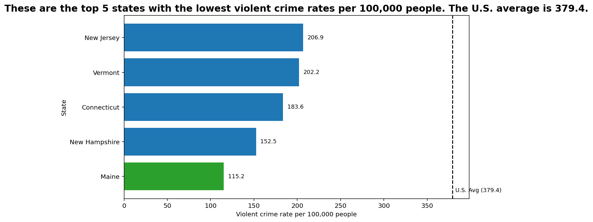
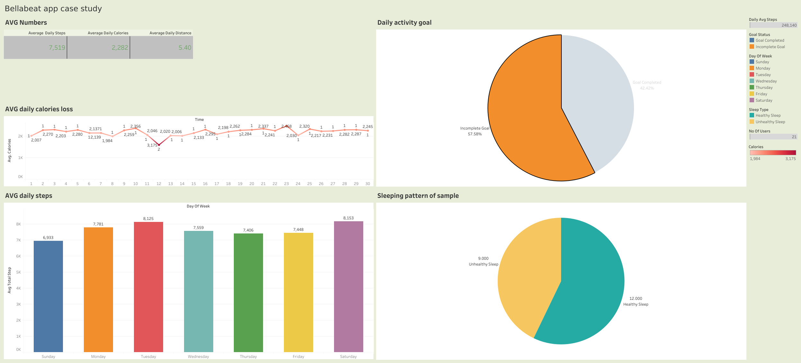
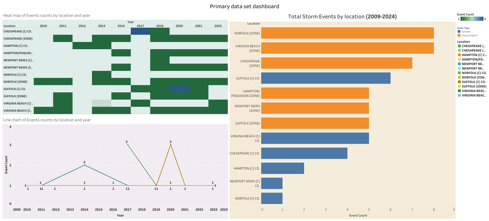
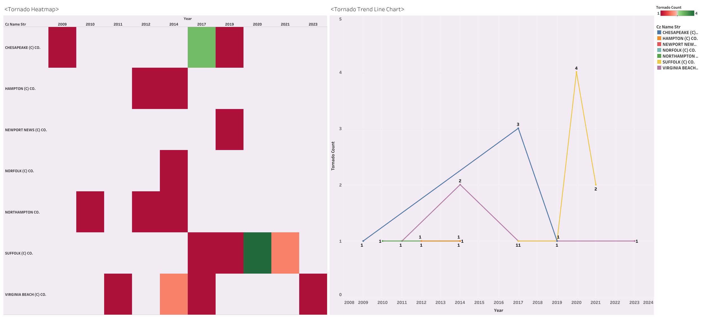

Data Science Student | Business Analytics & Predictive Modeling Specialist
CS 625 Graduate Final Project: Developed a programmatic data pipeline to clean, filter, and evaluate historical Federal Bureau of Investigation (FBI) and U.S. Department of Justice datasets spanning 1960 through 2019. The analysis isolates continuous metric distributions across violent crime definitions to identify geographic safety patterns.
To eliminate statistical bias and ensure modern analytical comparative constraints, a dedicated Python ETL pipeline was constructed to execute the following optimizations:
State, Year, Population, Data.Rates.Violent.All, Data.Totals.Violent.All.By computing an analytical baseline representing the national violent crime metric (calculating total nationwide violent events against absolute U.S. population matrices), a baseline reference score of 379.4 incidents per 100,000 residents was established. Filtering for the latest reporting period isolated a tight cluster of safe zones centered in the Northeastern region:
A horizontal axis configuration was chosen to eliminate textual overlap on category labels. This visualization overlays a calculated national average parameter line to establish immediate comparative contrast.

BNAL 403 Business Analytics Term Project: Conducted a corporate diagnostic operational audit evaluating product margin distributions across regional retail networks to flag profit degradation vectors.
Managed a complex mechanical reconstruction workflow transforming the baseline design architecture from its Targa specification into a highly complex Turbo Coupe engineering layout.
Exploratory tracking data research project capturing consumer health-biometrics behavior variables to optimize mobile marketing notifications engagement timing.

Supplemental interactive metrics dashboards and performance heatmaps tracking organizational dataset profiles:

